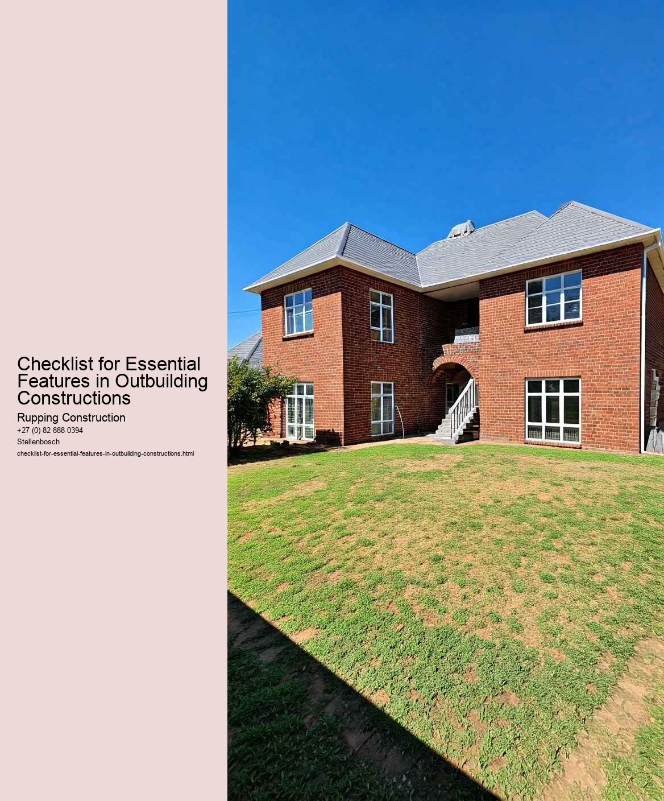

When embarking on the construction of an outbuilding, such as a shed, garage, or garden office, it is essential to understand the relevant building regulations and compliance requirements. These regulations are designed to ensure safety, energy efficiency, and environmental protection. A checklist for essential features can serve as a valuable guide for anyone involved in such projects.
Firstly, one of the most critical aspects of building regulations pertains to structural integrity. Outbuildings must be constructed to withstand local weather conditions, including wind loads and snow loads. This necessitates the use of appropriate materials and construction techniques. Before starting construction, it is advisable to consult with a qualified architect or structural engineer to ensure that the design meets all necessary standards.
Another key element of compliance is ensuring that the outbuilding adheres to zoning laws and planning permissions. These regulations can vary significantly based on location, and they dictate how far from property lines a structure can be built, its height, and its overall size. It is crucial to check with local authorities to obtain any necessary permits before commencing work, as failure to do so can result in fines or the need to dismantle the structure.
In addition to structural and zoning considerations, building regulations also address safety features. This includes fire safety measures, such as installing smoke detectors and ensuring that materials used in the construction are fire-resistant. Electrical and plumbing installations must also comply with safety standards, requiring inspections by certified professionals to prevent hazards.
Energy efficiency is another significant factor in modern building regulations. Outbuildings should be designed with insulation and ventilation in mind, reducing energy consumption and minimizing environmental impact. Compliance with energy efficiency standards not only contributes to sustainability but can also lead to cost savings in the long run.
Accessibility is another important aspect to consider. Depending on the intended use of the outbuilding, it may need to comply with accessibility regulations, ensuring that individuals with disabilities can access the space. This can involve incorporating features such as ramps, wide doorways, and appropriate restroom facilities.
Lastly, drainage and waste management must be addressed. Proper drainage is essential to prevent water damage and flooding, while waste disposal systems should comply with local health and environmental regulations. This may involve connecting to existing sewage systems or installing a septic tank, which must be properly permitted and maintained.
In conclusion, navigating building regulations and compliance is a vital component of constructing an outbuilding. By following a comprehensive checklist that covers structural integrity, zoning laws, safety features, energy efficiency, accessibility, and drainage, builders can ensure that their projects are not only compliant but also safe, functional, and environmentally responsible. Engaging with professionals and local authorities throughout the process can further streamline compliance and ultimately lead to a successful construction project.
Material selection and sustainability are pivotal considerations in the realm of outbuilding construction. As the demand for eco-friendly structures grows, it is essential to establish a checklist that highlights the essential features of materials used in such projects. This approach not only promotes environmentally responsible building practices but also ensures that the resulting structures are durable, efficient, and harmonious with their surroundings.
The first feature to consider is the environmental impact of the materials. This includes assessing the sourcing of raw materials, their embodied energy, and the carbon footprint associated with their production and transportation. Opting for locally sourced materials can significantly reduce transportation emissions and support local economies. Moreover, materials that are renewable or recyclable should be prioritized, as they contribute to a circular economy and minimize waste.
Another crucial feature is the durability and longevity of the materials. Sustainable construction aims to create structures that last without requiring frequent repairs or replacements. Choosing resilient materials can reduce the need for additional resources and energy over time. For instance, using treated wood that is resistant to pests or selecting metal roofing that can withstand extreme weather conditions can lead to lower maintenance costs and less frequent material replacement.
Energy efficiency is also a key consideration in material selection. Materials that provide better insulation can reduce energy consumption for heating and cooling, contributing to lower operational costs and a smaller carbon footprint. High-performance insulation, energy-efficient windows, and reflective roofing materials are examples of features that can enhance the sustainability of an outbuilding.
Water efficiency is an essential aspect that should not be overlooked. Selecting materials that are resistant to moisture and mold can prolong the life of the building, while also promoting healthier indoor air quality. Furthermore, employing materials that facilitate rainwater harvesting or greywater recycling can enhance the sustainability of the structure by minimizing water waste.
Finally, it is important to consider the aesthetic integration of materials with the surrounding environment. Sustainable outbuildings should not only serve their functional purposes but also blend seamlessly into their natural settings. Choosing materials that match the local landscape and architecture can enhance the visual appeal of a structure while promoting a sense of place and community.
In conclusion, a thoughtful approach to material selection in outbuilding construction is crucial for ensuring sustainability. By focusing on the environmental impact, durability, energy efficiency, water conservation, and aesthetic integration of materials, builders can create structures that are not only functional and long-lasting but also environmentally responsible. This checklist serves as a guiding framework to navigate the complexities of material choices, ultimately contributing to a more sustainable future in construction.
Design and aesthetic considerations play a pivotal role in the construction of outbuildings, which serve various purposes, from storage spaces to recreational areas. When embarking on the journey of building an outbuilding, it is essential to compile a checklist of features that not only meet functional requirements but also align with aesthetic values. This approach ensures that the structure is not only practical but also harmonizes with its surroundings, enhancing the overall appeal of the property.
First and foremost, the choice of materials is a crucial aspect of both design and aesthetics. The materials selected should complement the main building and blend seamlessly with the landscape. For instance, if the primary residence is constructed from brick, it may be wise to incorporate similar elements in the outbuilding. Wood, metal, and even glass can also be utilized effectively, depending on the desired look and feel. The texture, color, and finish of these materials should be considered carefully to create a cohesive visual narrative.
Another significant consideration is the architectural style of the outbuilding. Whether opting for a modern, minimalist design or a more traditional approach, the style should resonate with the existing structures on the property. This alignment not only enhances the visual appeal but also adds value to the property. Features such as rooflines, window styles, and door designs should be thoughtfully chosen to reflect the overall architectural theme.
In terms of functionality, the layout and design of the outbuilding should be practical and user-friendly. A well-planned space can significantly enhance the usability of the structure. Consideration should be given to the intended use of the outbuilding-be it for storage, a workshop, or a guest suite. The design should facilitate easy access and efficient use of space, ensuring that it meets the needs of its occupants.
Additionally, incorporating natural light into the design can greatly enhance the aesthetic quality of an outbuilding. Strategically placed windows, skylights, or even large sliding doors can create an inviting atmosphere while reducing the reliance on artificial lighting. This not only improves the functionality of the space but also fosters a connection with the outdoors, making the outbuilding a more enjoyable place to spend time.
Landscaping around the outbuilding is another essential feature that should not be overlooked. Thoughtfully designed gardens, pathways, and outdoor seating areas can create a seamless transition between the outbuilding and the surrounding environment. Native plants and sustainable landscaping practices can further enhance the aesthetic appeal while promoting ecological harmony.
Lastly, sustainability should be a key consideration in both design and aesthetic choices. Utilizing energy-efficient materials, renewable energy sources, and environmentally friendly building practices can significantly reduce the ecological footprint of the outbuilding. This commitment to sustainability not only benefits the environment but also resonates with an increasingly eco-conscious audience.
In conclusion, when constructing an outbuilding, it is essential to prioritize design and aesthetic considerations alongside functional features. A checklist that includes material selection, architectural style, practical layout, natural light incorporation, landscaping, and sustainability will ensure that the outbuilding is both a valuable addition to the property and a visually appealing structure. By harmonizing these elements, homeowners can create an outbuilding that enhances their living space while reflecting their personal style and values.
When planning outbuilding constructions, the integration of utilities and services is a critical aspect that can significantly influence both functionality and comfort. An effective checklist for essential features in this context ensures that all necessary elements are considered, promoting a seamless integration of utilities like electricity, water, heating, and waste disposal.
To begin with, electrical systems are paramount in any outbuilding. A well-planned electrical layout should not only accommodate lighting and power outlets but also consider future needs. The checklist should include the number of circuits, types of fixtures, and potential for renewable energy sources, such as solar panels. This foresight can lead to increased energy efficiency and reduced long-term costs.
Water supply is another essential utility that must be integrated thoughtfully. This involves not only the physical connection to existing water sources but also the planning for plumbing systems that ensure proper drainage and wastewater management. The checklist should cover aspects like pipe materials, insulation, and the location of fixtures to prevent freezing in colder climates. Additionally, rainwater harvesting systems could be considered as a sustainable alternative, adding to the buildings environmental credentials.
Heating and cooling systems are also vital features that need to be meticulously planned. Depending on the intended use of the outbuilding, whether it be a workshop, guest house, or office, the checklist should evaluate different heating solutions, such as radiators, underfloor heating, or air conditioning units. Proper insulation and ventilation must also be considered to ensure year-round comfort and energy efficiency.
Moreover, waste disposal systems should not be overlooked. Whether connecting to municipal sewage systems or implementing a septic tank, the checklist should ensure compliance with local regulations and environmental standards. This consideration is crucial for maintaining hygiene and preventing potential legal issues.
Finally, communication services, including internet and telephone lines, are increasingly becoming essential in modern constructions. The checklist should address the infrastructure required for reliable connectivity, enabling occupants to work or stay connected without interruption.
In conclusion, the integration of utilities and services in outbuilding constructions requires careful planning and consideration of various factors. A comprehensive checklist that encompasses electrical systems, water supply, heating and cooling solutions, waste disposal, and communication services ensures that all essential features are accounted for. By attending to these details, builders can create functional, comfortable, and sustainable outbuildings that meet the diverse needs of their users.
Checklist for Compliance in Outbuilding Construction Projects